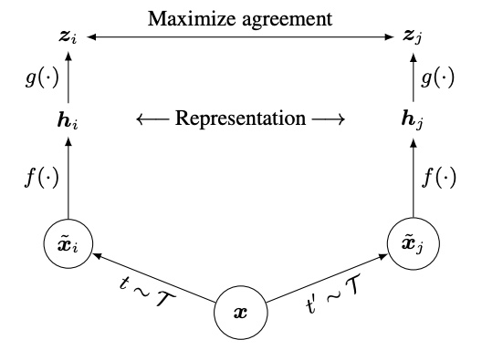

title: SimCLR
tags: architecture
SimCLR¶
- A Simple Framework for Contrastive Learning of Visual Representations
- contrastive learning of visual representations
- without requiring specialized architectures or a memory bank
- composition of data augmentations plays a critical role in defining effective predictive tasks
- introducing a learnable nonlinear transformation between the representation and the contrastive loss substantially improves the quality of the learned representations
- contrastive learning benefits from larger batch sizes and more training steps compared to supervised learning
- use of a nonlinear head at the end of the network, and the loss function
- Res Net
- Two separate data augmentation operators are sampled from the same family of augmentations
- applied to each data example to obtain two correlated views
- After training is completed, they throw away the projection head and use the encoder for downstream tasks
- head \(g(\cdot)\)
- encoder \(f(\cdot)\)
- representation \(h\)
